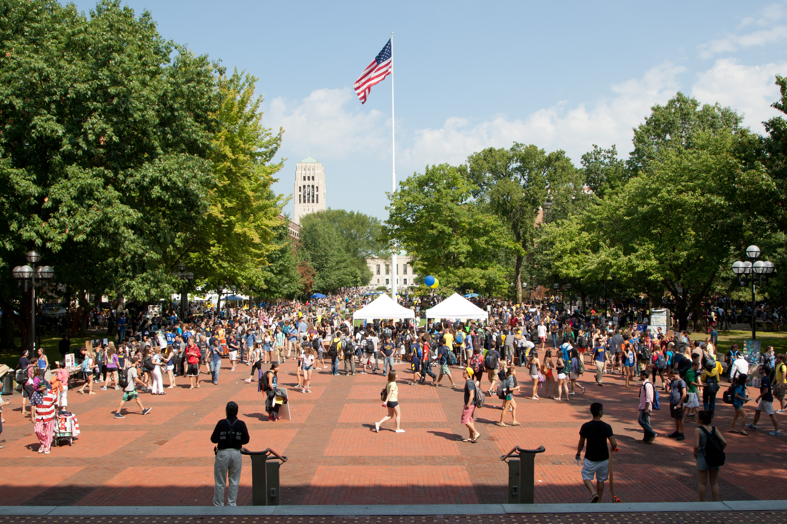
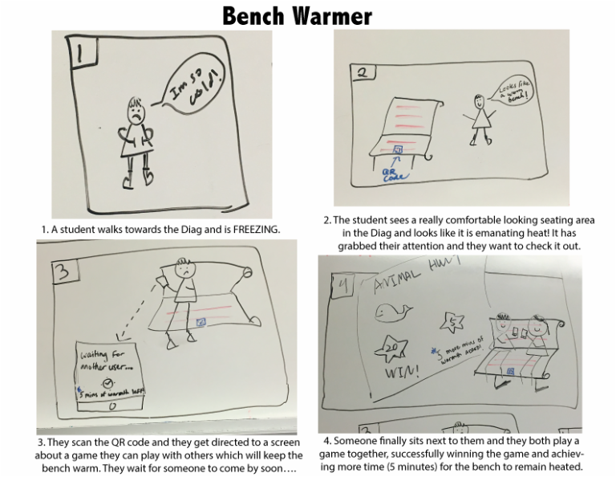
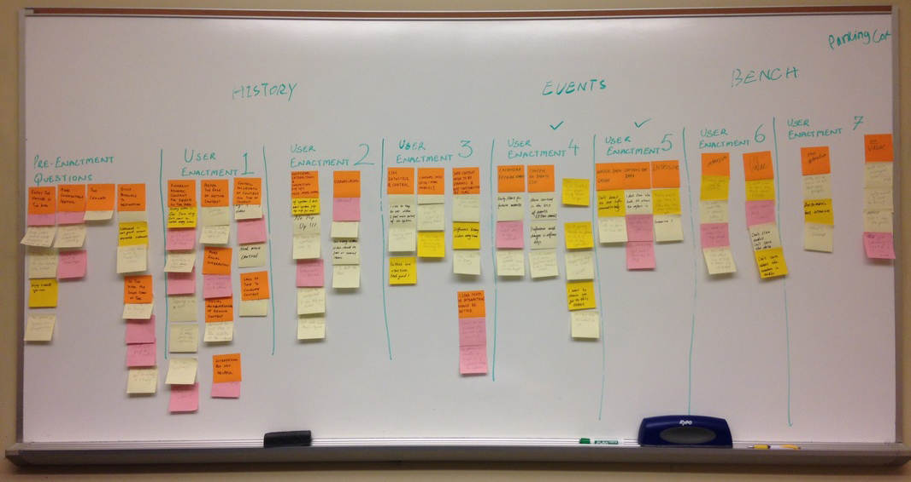

INform VR Prototype
A pervasive interaction design project that seeks to improve the consumption of information in a more passive manner by means of an augmented reality experience.
Project Overview
The Diag is a large open space in the middle of the University of Michigan’s central campus. One of the busiest sites on the university campus hosts a variety of events ranging from outdoor concerts to fundraisers to public demonstrations.
In this project, my team created a VR prototype solution that would help alleviate the information overload and other challenges that students experience when walking through the Michigan Diag space. This project was part of a course at Michigan called SI 612: Pervasive Interaction Design, where I joined 3 other students (Nan Tang, Fangwen Zhao, and Mayank Khanna) in this group project. My role involved conducting the user enactments, did interviews, and helped determine the systems technology.
In summation, our solution tries to address transfer of such information in a more passive manner by means of an augmented reality experience. It aims at providing users contextual information about events happening in a public space such as the diag in a manner that gives them the control on when they want to see that information.ROLE
UX Researcher + UX Designer
DURATION
Sept 2015 - Dec 2015
METHODOLOGY + TOOLS
User Enactments, Prototyping, Cultural Probest
Context
The Diag is a large open space in the middle of the University of Michigan’s central campus. One of the busiest sites on the university campus hosts a variety of events ranging from outdoor concerts to fundraisers to public demonstrations. Such events are usually hosted by university student groups or staff and usually involve volunteers that move around the diag passing flyers and talking to the people walking through the diag or spending time there.
Project Definition
Our first milestone was focused on defining and narrowing our project scope. We all decided we wanted to focus on public spaces and using entertaining interactions in order to be engaged with a space. We did some preliminary observations at certain public spots where people normally have fun at. We learned what motivates people to be at these places and what makes them fun. For example, I did some observations at a party I went to and learned that people were having fun when other people are there. We took our observations and gleaned insights from them, using the insights to brainstorm early ideas for our project.
Formative Study (Interviews)
Considering the diag is one of the busiest open public space in the campus, we chose it to be the focus of our study and students passing through the diag or taking rest in the diag as our target users. We interviewed these students to gain feedback on their experience in the diag, their reasons to be present there or pass through it and the amount of time they spent in the diag.
In order to better understand our target users and their interactions with the public space, “the diag”, we conducted structured interviews as part of our methodology. We included cultural probes as part of these interviews to better understand our user’s thoughts and feelings about specific things that they would find or experience within the diag. We conducted 13 interviews on campus over a period of a week, with one person taking notes and the other person conducting the interview.
The Problem
After we conducted the research, the data illustrated that while people are interested in knowing about these events and their agenda, they prefer receiving this information at their own will and when they are interested in receiving such information. The fact that such information is passed to people in the diag through in-person interaction by strangers and at times people would not be interested in, is seen as a disturbance and interruption by people in the diag.
Concept Creation
Based on our findings from interviews, high-level design concepts were generated in order to address the different problems and constraints we came across. Our design concepts focused on the idea of having objects or technology embedded in the environment instead of providing a technology to the user. While our interviewees expressed a need for limited interaction with other people/strangers in the diag, we also focused on that as an opportunity for designing concepts that would allow people to passively interact with each other.
Out of the entire set of concepts generated using the speed dating matrix (27 concepts), we decided to focus only on 7 concepts which seemed relevant to our design constraints. The 7 specific concepts are highlighted in our speed dating matrix here. We tested these concepts/enactments with 5 users in the diag itself in order to make it as contextual for them as possible.
Experience Prototyping, Part 1
Considering that we scoped our design problem to focus on ways we could improve the way people consume information in the diag, we identified three kinds of information which people would be interested to consume in the diag:
- History and past events that have happened in the diag.
- Current events happening in the diag.
- Information from different objects in the diag such as how many people cross the diag or how many people used a particular bench in the diag.
Based on our current focus and scope, we built user enactments to showcase the different pieces of information mentioned above. We utilized a speed dating matrix to conceptualize our systems with varying levels of proactiveness from the environment for the user. For example, A display that invokes as the user approaches it would be considered high proactivity while the display invoking on some user interaction with the object would be considered as low proactivity.
Out of the entire set of concepts generated using the speed dating matrix (27 concepts), we decided to focus only on 7 concepts which seemed relevant to our design constraints. The 7 specific concepts are highlighted in our speed dating matrix here. We tested these concepts/enactments with 5 users in the diag itself in order to make it as contextual for them as possible.
Affinity Mapping
Based on our user enactments and the user’s experience with them, we categorized the feedback we received into general themes that were common across those enactments. The main findings are as follows:
- Users did not like the lack of control in our second user enactment where users would get an informational display once they were in close proximity to an object in the Diag. Users were appreciative of the ease of getting content, however, too much proactiveness in part of the environment was considered intrusive.
- Users also wanted to be able to access information at a later time. Because our users are in the Diag for a short time, users felt that it would be very useful for them to access information like the history of the diag and future events in the diag at their own convenience.
- Users were concerned about the content being the same everyday, therefore they wanted to know how the content will be dynamic and meaningful every time they visit the Diag.
- Users experienced social awkwardness when interacting with objects through hand gestures and conversation with objects.
- Users needed transparency in how personal information gets collected. For example, one user was particularly interested in how the Diag would know what were their interests were.
Experience Prototyping, Part 2
Overall, based on the feedback we received from the user enactments, we found that the history of the diag concept was considered irrelevant by the users. Due to limited time in conceptualizing and creating our final demos we decided to focus on conceptualizing our ideas on only current events happening in the diag and the future events that would take place in the diag. We then developed a demo of our proposed system with the concepts above to our class and recevieved valuable feedback that helped us further refine our final system concept.
Final System Proposal
The system concept we proposed is called “INform”, an amalgamation of the word “inform” and “in”, as to illustrate the overall point of how our system works to “inform” users about a public space they are “in”. It is an augmented reality experience that is embedded in the user’s eyeglasses and provides them with contextual information about a public space such as the Diag in a manner that gives them control on when they want to see that information. The system uses a combination of GPS, Bluetooth, RFID tags, and eye tracking technology.